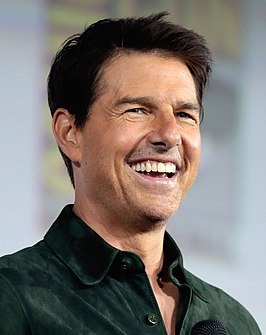

Home
films
About

About Tom
n 1982 heeft Cruise zijn eerste filmrol in Endless Love. Daarna volgt een aantal grotere rollen en in 1984 breekt hij door met de films Risky Business en All the Right Moves. Een echte superster wordt hij door zijn rollen als Lt. Pete "Maverick" Mitchell in de kaskraker Top Gun (1986) en als jonge poolspeler in The Color of Money naast Paul Newman. In 1989 volgen Rain Man met Dustin Hoffman en de minder gewaardeerde film Cocktail met Elisabeth Shue en Gina Gershon. De successen in het vervolg van zijn carrière waren Born on the Fourth of July (1989), hiervoor kreeg hij zijn eerste Oscar-nominatie voor beste acteur. Tien jaar later kreeg hij voor Magnolia (1999) zijn tweede nominatie voor een Oscar. Veel succes had hij ook met de rol van luitenant en beginnend advocaat Daniel Kaffee in het militairrechtbankdrama A Few Good Men met Jack Nicholson en Demi Moore (1992). Tom Cruise was de eerste acteur die vijf achtereenvolgende films had gemaakt met een opbrengst van boven de 100 miljoen. Dit deed hij met de films A Few Good Men (1992), The Firm (1993), Interview with the Vampire: The Vampire Chronicles (1994), Jerry Maguire (1996) en Mission: Impossible (1996). In 2006 speelde hij in Mission: Impossible III voor de derde keer de rol van Ethan Hunt. Een van zijn volgende projecten zou "The Few" worden, waarin hij de rol zou vertolken van Billy Fiske, een bekende Amerikaanse piloot die vocht in de Tweede Wereldoorlog. Eind augustus 2006 werd Cruise echter ontslagen door de filmmaatschappij Paramount. Volgens dat bedrijf was het gedrag van Cruise buiten de studio (zijn relatie met Katie Holmes en zijn voorliefde voor Scientology) reden voor de breuk met Cruise' productiemaatschappij.[2] Eind 2021 of later zal Cruise samen met regisseur Doug Liman met een Crew Dragon naar het ISS reizen om daar een aantal scènes voor een film op te nemen.